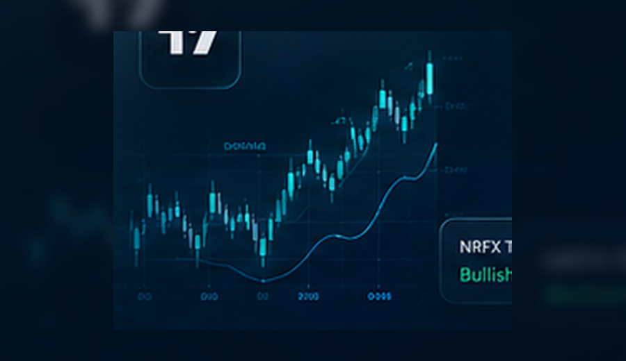

01
وضوح مؤسسي
تجربة مرتبة ومحتوى واضح يساعد المستخدم يفهم قبل التواصل.
No Risk FX
روبوتات تداول وخبراء مستشارين لأتمتة الاستراتيجيات وتنفيذ الصفقات بكفاءة أعلى.

تجربة مرتبة ومحتوى واضح يساعد المستخدم يفهم قبل التواصل.
يمكن تعديل المحتوى من لوحة الأدمن ضمن نظام CMS الجديد.
لغة تعليمية احترافية بدون توصيات شراء/بيع أو وعود أرباح.
التداول عالي المخاطر. هذه الصفحة للتوعية وليست نصيحة مالية.